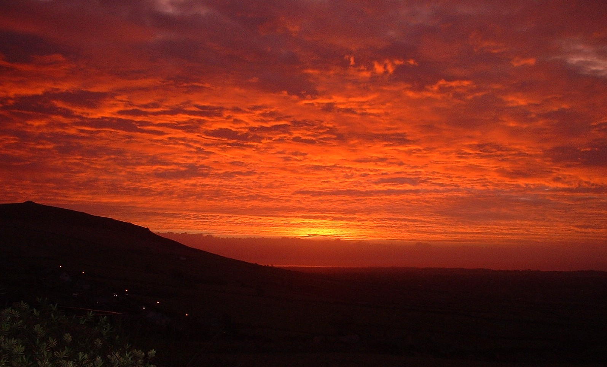
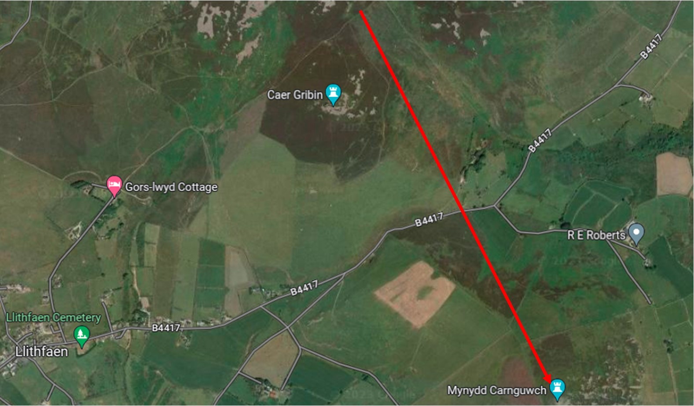

Carnedd Gladdu Mynydd Carnguwch
 Mynydd Carnguwch o lethrau’r Eifl.
Mynydd Carnguwch o lethrau’r Eifl.
Saif y garnedd gladdu Oes Efydd ar gopa Mynydd Carnguwch, ychydig i’r gogledd-ddwyrain o bentref Llithfaen. Yn ystod yr ail fileniwm cyn Crist byddai pobl yn aml yn cael eu claddu mewn cist gerrig o dan bentwr o gerrig. Y pentwr o gerrig yw’r ‘garnedd’ ac yn sicr yn Eryri a Llŷn cawn enghreifftiau lu o hyn ar gopaon mynyddoedd.
 Y garnedd gladdu ar gopa Mynydd Carnguwch.
Y garnedd gladdu ar gopa Mynydd Carnguwch.
Ffurf hirgrwn sydd i’r garnedd sydd yn mesur oddeutu 43 medr a 31 medr o ran hyd a lled ac fe adeiladwyd y garnedd ar ddarn o graig naturiol. Mesurai’r garnedd dros 6 medr o uchder a byddai cerrig wyneb wedi gorchuddio canol y garnedd yn wreiddiol. Cyflwr braidd yn druenus sydd i’r cerrig wyneb erbyn heddiw ond mae ffurf y garnedd ddigon amlwg. Bedd unigolyn fyddai carnedd fel hyn. Pwy a wŷr pwy oedd yr unigolyn yma? Chawn ni byth wybod, ond bu ymdrech i godi carnedd o’r fath. Roedd yma fwriad i gofio am rhywun o bwys yn sicr.
Y wawr dros Mynydd Carnguwch.
Ar lethrau dwyreiniol Carnguwch cawn hyd i gytiau crynion, sef tai pobl oedd yn byw a ffermio yma yn yr Oes Haearn, sef y canrifoedd cyn ac yn ystod y cyfnod Rhufeinig. Ceir clwstwr o gytiau ger ffermydd Carnguwch Fawr, Tyddyn Bach a Llech-engan.
Gan fod yma dir amaethyddol gymharol ffrwythlon cawn hefyd olion o dai llwyfan canoloesol sydd yn cadarnhau fod yma barhad o amaethu dros y canrifoedd. Gwelir enghraifft dda o dŷ llwyfan ger yr eglwys – ychydig i’r gogledd o fferm Penfras Uchaf a sawl enghraifft arall i’r de o Hafod ar lethr ogleddol Carnguwch.
I’r de o fynydd Carnguwch mae eglwys hynafol Beuno Sant a chawn faen hir ac ambell ganfyddiad o wrthrychau o’r caeau o’r Oes Efydd sydd yr un cyfnod a’r garnedd gladdu ar y copa. Rydym yn sôn am dirwedd hanesyddol a chyn hanesyddol yn yr ardal hon. Wrth deithio am y gorllewin tuag at pentref Llithfaen mae carnedd Carnguwch yn nodwedd amlwg ar y dirwedd.
Map yn dangos cyfeiriad Mynydd carnguwch o lethrau’r Eifl